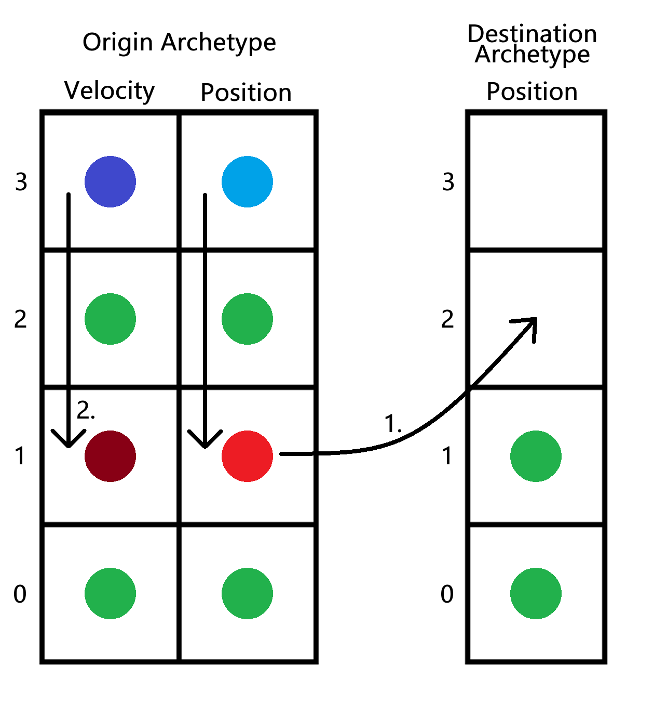
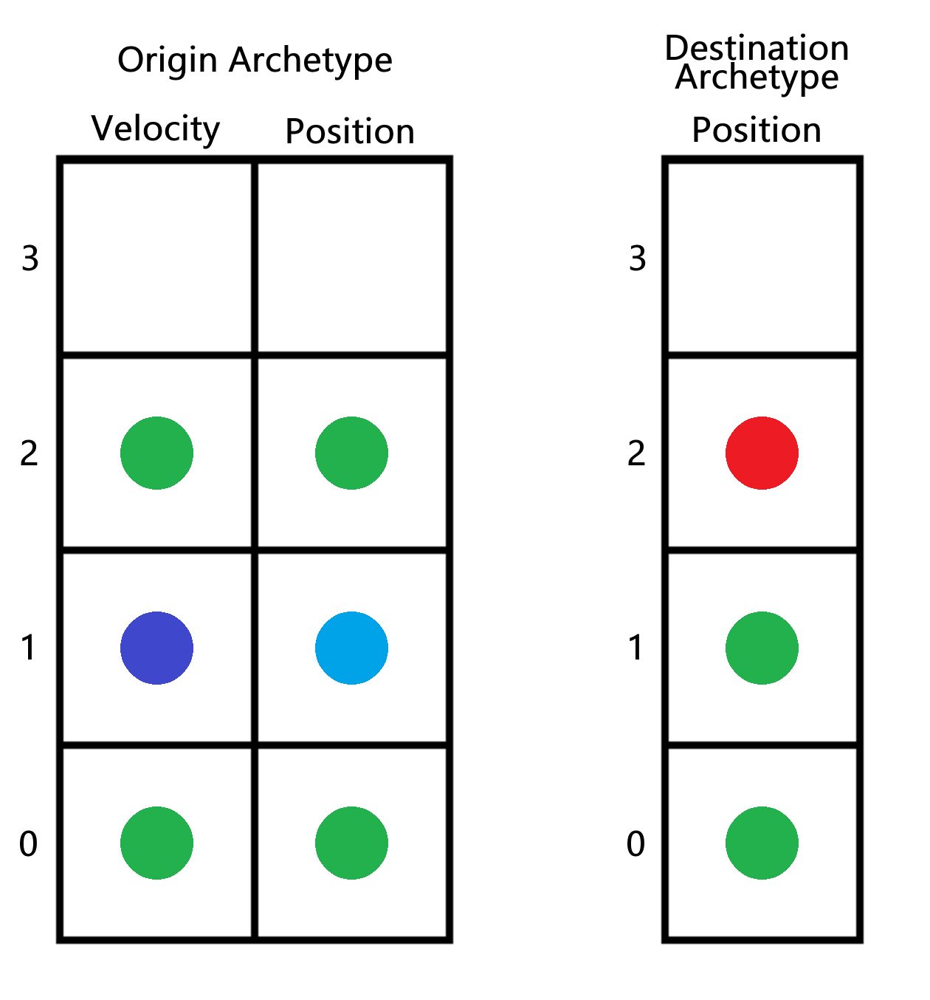

Optimizing Archetype Graph Traversal
04/20/2025
Note: This article assumes an understanding of what an ECS is.
Background
There are two main ways to implement an ECS, using a sparse set or through archetypes. Each method has its own pros and cons and areas of complexity. In this article, I will be focusing on a pain point of archetypical ECS, namely adding and removing components from entities.
In a sparse set ECS, adding and removing components generally only requires setting an item in a sparse set. However, in an archetypical ECS, the framework needs to:
- Copy components into destination archetype.
- Copy components within the origin archetype from the top to the slot where the previous entity was.
In the diagram, the entity with red components has its Velocity component removed.


Problem
In addition to this expensive O(n) operation (where n is the component count), the framework also needs to find this destination archetype. Older ECS frameworks used to naively hash the set of component types. Nowadays, that is only done as fallback to lazily build an archetype graph, where archetypes are nodes and edges are component types. The archetype graph edges are stored in a hashmap for fast access, and each archetype has its own hashmap representing the edges going outwards (For more information, visit Sander Merten's excellent articles on archetypical ECS).
In my ECS, a single hashmap of (ArchetypeID Origin, ComponentType Delta) -> (ArchetypeID Destination) is stored in the world to save ~80 bytes of memory overhead per archetype, which works identically. In addition, there are Add<T>, Add<T1, T2>, etc. component overloads up to T8.
The problem comes with hashmap lookup speeds. For me, this hashmap lookup consumed a surprisingly large amount of time. When adding 5 components for example, 5 hashmap lookups would need to be done one after another to find the destination archetype. This also forces all intermediate archetypes to be registered. For example, adding [Position, Velocity] to an entity with [] forces the archetype [Position] to exist as archetypes [] -> [Position] -> [Position, Velocity] are traversed. In the worst case, these lookups become a majority of the time spent when adding and removing components. I have also seen cases where it's literally cheaper to use the naive method of directly hashing an array of component types.
Static Caches
In C#, generics and static classes can be used to create per-method static buffers. A void M<T> can have a corresponding class C<T> with whatever static fields needed. In C++ static buffers can be directly declared in a method. The key is to use this static buffer to cache a small amount of archetype edge data per generic method.
Instead of looking up an edge using a component type, these caches store ArchetypeID Origin -> ArchetypeID Destination pairs. The component 'delta' or what components to be added/removed is implicitly encoded in the method call itself - Add/Remove<T1, T2, T3...>. The best part is that if a user doesn't use Add/Remove functions at all, these static caches never need to be allocated. To lookup data in these caches is a simple index of operation over a small fixed-size buffer, which can be easily optimized through unrolling and vectorization.
Example
Let's say the empty archetype [] has archetype ID: 42, and the archetype [Position, Velocity] has archetype ID 108. Next, we call Add<Position, Velocity> on an entity with no components and belongs to the empty archetype []. The first time this method is called the static cache is empty and we fallback to hashing. We construct a [typeof(Position), typeof(Velocity)] array and use it to lookup the archetype ID 108. We place this into the method static cache (Origin: 42, Destination: 108) and continue with transferring components.
Later on, let's say another entity with no components has Add<Position, Velocity> called on it. We know the origin archetype ID is 42, and we look for that in the cache, find it, and skip the entire process of hashmap lookups and hashing a new component array.
The downside is that this method also requires archetype ids to be persistent (archetypes themselves can be deleted).
Back to the Archetype Graph
In a way, the archetype graph still exists, albeit with different kinds of edges. Not only can edges be a single component type, "Add Position" "Remove Velocity" but also multiple component types: "Add Position Velocity" and "Remove Position Velocity". The graph is also directed, as caches are only accessible from the method they belong to.
The Add(A, B, C) edge skips over all the expensive archetype graph traversals.
